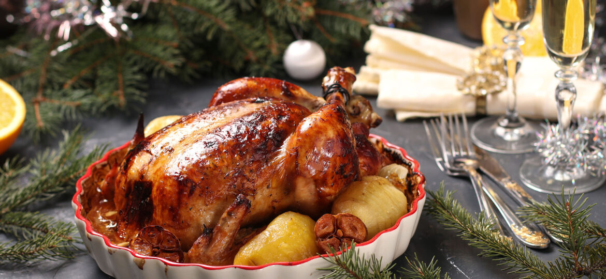

5 SECRETOS PARA UN PAVO JUGOSO
El miedo número uno de la Navidad es que el pavo quede seco como cartón. Pero no te preocupes, aquí te revelamos los 5 secretos de los chefs para que tu cena sea un éxito total.
1. La Salmuera es tu mejor amiga
Remojar el pavo en agua con sal (y hierbas) durante 12 horas antes de cocinarlo hace que la carne absorba líquido y sabor. ¡Es química básica!
2. Mantequilla por debajo de la piel
No solo barnices por fuera. Separa con cuidado la piel de la carne e introduce trozos de mantequilla con hierbas. Esto hidratará la pechuga directamente.
3. No confíes en el botón rojo
Muchos pavos traen un termómetro de plástico. ¡Ignóralo! Suele saltar cuando el pavo ya está sobrecocido. Usa un termómetro de carne y busca llegar a los 74°C internos.
4. El tiempo de reposo
Este es el error más común: cortar el pavo saliendo del horno. Debes dejarlo reposar tapado con aluminio al menos 30 minutos para que los jugos se redistribuyan.
¿Listo para cocinarlo? Ve a nuestra Receta de Pavo Relleno.